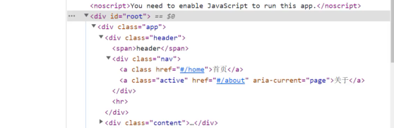
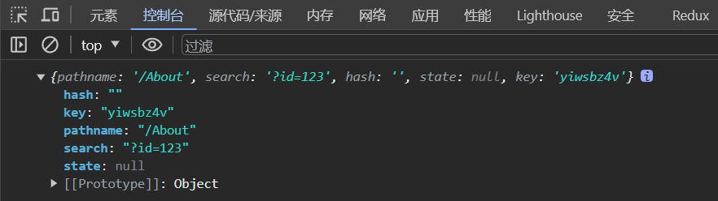

认识react-router
目前前端流行的三大框架, 都有自己的路由实现:
- Angular的ngRouter
- React的ReactRouter
- Vue的vue-route
目前使用的是 React Router6.x 版本；
安装React Router
npm install react-router-dom安装时，我们选择react-router-dom；react-router会包含一些react-native的内容，web开发并不需要；
导入组件并使用
import { BrowserRouter,HashRouter } from "react-router-dom";- BrowserRouter：使用history模式；
- HashRouter：使用hash模式；
const root = ReactDOM.createRoot(...);
root.render(
<BrowserRouter>
<App />
</BrowserRouter>
);路由映射配置
-
Routes：包裹所有的Route，在其中匹配一个路由
Router5.x使用的是Switch组件
-
Route：Route用于路径的匹配；
-
path属性：用于设置匹配到的路径；
-
element属性：设置匹配到路径后，渲染的组件；
Router5.x 使用的是component属性
-
exact：精准匹配，只有精准匹配到完全一致的路径，才会渲染对应的组件；
Router6.x 不再支持该属性
-
import { Routes, Route, Link } from "react-router-dom";
import Home from "./Home";
import About from "./About";
export class APP extends PureComponent {
render() {
return (
<div>
<header></header>
<main>
<Routes>
<Route path="/" element={<Home />} />
<Route path="/Home" element={<Home />} />
<Route path="/About" element={<About />} />
</Routes>
</main>
<footer></footer>
</div>
);
}
}路由配置和跳转
使用Link和NavLink组件。
通常路径的跳转是使用Link组件，最终会被渲染成a元素；
to属性：Link中最重要的属性，用于设置跳转到的路径；
import { Routes, Route, Link } from "react-router-dom";
import Home from "./Home";
import About from "./About";
export class APP extends PureComponent {
render() {
return (
<div>
<header>
<Link to='/Home'>首頁</Link>
<Link to='/About'>关于</Link>
</header>
<main>
<Routes>
<Route path="/" element={<Home />} />
<Route path="/Home" element={<Home />} />
<Route path="/About" element={<About />} />
</Routes>
</main>
<footer></footer>
</div>
);
}
}NavLink是在Link基础之上增加了一些样式属性；
如果我们需要再路径选中时，对应的a元素变为红，我们就要使用NavLink组件来替代Link组件。
import { Routes, Route, NavLink } from "react-router-dom";
export class APP extends PureComponent {
render() {
return (
<div>
<header>
<NavLink to="/Home">首頁</NavLink>
<NavLink to="/About">关于</NavLink>
</header>
<main></main>
<footer></footer>
</div>
);
}
}在默认匹配成功时，NavLink就会添加上一个动态的active class，所以我们可以直接编写样式；

当热，我们也可以通过参数进行样式修改
- style：传入函数，函数接受一个对象，包含isActive属性
- className：传入函数，函数接受一个对象，包含isActive属性
<NavLink to="/Home" style={({ isActive }) => ({ color: isActive ? "red" : "" })}>首頁</NavLink>
<NavLink to="/About" className={({ isActive }) => (isActive ? "active" : "")}>关于</NavLink>Navigate导航
Navigate用于路由的重定向，当这个组件出现时，就会执行跳转到对应的to路径中。
-
当我们未登录时进入用户页面，可以通过Navigate重定向到登录页面；
{this.state.isLogin ? <Navigate to="/Home" /> : <button>登录</button>} -
在匹配到/的时候，直接跳转到/home页面；
<Route path="/" element={<Navigate to="/Home" />} />
Not Found页面配置
<Route path="*" element={<NotFound />} />路由的嵌套
假设Home1和Home2是Home的子页面
import { PureComponent } from "react";
import { Routes, Route, Link, Navigate } from "react-router-dom";
import Home from "./Home";
import About from "./About";
import Home1 from "./Home1";
import Home2 from "./Home2";
export class APP extends PureComponent {
render() {
return (
<div>
<header>
<Link to="/Home">首頁</Link>
<Link to="/About">关于</Link>
</header>
<main>
<Routes>
<Route path="/" element={<Navigate to="/Home" />} />
<Route path="/Home" element={<Home />}>
<Route path="/Home" element={<Navigate to="/Home/Home1" />} />
<Route path="/Home/Home1" element={<Home1 />} />
<Route path="/Home/Home2" element={<Home2 />} />
</Route>
<Route path="/About" element={<About />} />
</Routes>
</main>
<footer></footer>
</div>
);
}
}<Outlet />组件用于在父路由元素中作为子路由的占位元素，类似于vue的<router-view />。
import React, { PureComponent } from "react";
import { Link, Outlet } from "react-router-dom";
export class Home extends PureComponent {
render() {
return (
<div>
<h1>Home</h1>
<Link to="/Home/Home1">Home1</Link>
<Link to="/Home/Home2">Home2</Link>
<Outlet />
</div>
);
}
}
export default Home;手动路由的跳转
目前我们实现的跳转主要是通过Link或者NavLink进行跳转的，实际上我们也可以通过JavaScript代码进行跳转。
如果我们希望通过JavaScript代码逻辑进行跳转（比如点击了一个button），那么就需要获取到navigate对象。在Router6.x版本之后，我们需要通过useNavigate的Hook获取到navigate对象进行操作；
import { useNavigate } from "react-router-dom";::: tip
hook只能在个函数式组件中使用，因此在类组件中我们无法使用useNavigate
:::
如果我們需要在类组件中使用，那我们需要自己编写一个高阶组件
function withRouter(WrapperComponent) {
return function (props) {
const navigate = useNavigate();
const router = { navigate };
return <WrapperComponent {...props} router={router} />;
};
}在组件中使用
import React, { PureComponent } from "react";
export class Home1 extends PureComponent {
navigateTo() {
const { navigate } = this.props.router;
navigate('/about')
}
render() {
return <h3>Home1</h3>;
}
}
export default withRouter(Home1);路由参数传递
传递参数有二种方式：
-
动态路由的方式；
动态路由的概念指的是路由中的路径并不会固定。我们可以使用
useParams获取参数import { useParams } from "react-router-dom";明显
useParams是hook，因此无法再类组件中使用，因此需要修改withRouter函数function withRouter(WrapperComponent) { return function (props) { const navigate = useNavigate(); const params = useParams(); const router = { navigate, params }; return <WrapperComponent {...props} router={router} />; }; }如果我们将path在Route匹配时写成/About/:id，那么 /About/abc、/About/123都可以匹配到该Route，并且进行显示。
export class APP extends PureComponent { render() { return ( <div> <Routes> <Route path="/About/:id" element={<About />} /> </Routes> </div> ); } }获取参数
import React, { PureComponent } from "react"; export class About extends PureComponent { render() { const { params } = this.props.router; return ( <div> <h1>About</h1> <h3>id:{params.id}</h3> </div> ); } } export default withRouter(About); -
search传递参数；
获取查询字符串有两种方式。
-
useLocationimport { useLocation } from "react-router-dom";首先修改
withRouter函数function withRouter(WrapperComponent) { return function (props) { const navigate = useNavigate(); const params = useParams(); const location = useLocation(); const router = { navigate, params, location }; return <WrapperComponent {...props} router={router} />; }; }打印location对象

-
useSearchParamsimport { useSearchParams } from "react-router-dom";获取查询参数
const [searchParams, setSearchParams] = useSearchParams(); searchParams.get("id"); searchParams.get("name");searchParams在获取查询参数的时候是固定的，需要把它转成普通对象。首先修改
withRouter函数function withRouter(WrapperComponent) { return function (props) { const navigate = useNavigate(); const params = useParams(); const location = useLocation(); const [searchParams, setSearchParams] = useSearchParams(); const query = Object.fromEntries(searchParams); const router = { navigate, params, location, query }; return <WrapperComponent {...props} router={router} />; }; }
-
路由的配置方式使用
目前我们所有的路由定义都是直接使用Route组件，并且添加属性来完成的，但是这样的方式会让路由变得非常混乱，我们希望将所有的路由配置放到一个地方进行集中管理。
在早期的时候，Router并且没有提供相关的API，我们需要借助于react-router-config完成；
在Router6.x中，我们可以使用useRoutes完成相关的配置。
import { useRoutes } from "react-router-dom";
import routes from "./routes";
function APP() {
return (
<div>
{useRoutes(routes)}
</div>
);
}配置routes
import Home from "./Home.jsx";
import About from "./About.jsx";
import { Navigate } from "react-router-dom";
const routes = [
{
path: "/",
element: <Navigate to="/home" />,
},
{
path: "/home",
element: <Home />,
children: [
{
path: "/home/home1",
element: <Home1 />,
},
],
},
{
path: "/about",
element: <About />,
},
{
path: "/about/:id",
element: <About />,
},
{
path: "*",
element: <NotFount />,
},
];
export default routes;懒加载
不直接导入，使用React.lazy导入，routes数组保持不变
import React from "react";
const About = React.lazy(() => import("./About.jsx"));
const routes = [
{
path: "/about",
element: <About />,
},
];如果我们对某些组件进行了异步加载（懒加载），那么需要使用Suspense进行包裹：
import { BrowserRouter } from "react-router-dom";
import { Suspense } from "react";
const root = ReactDOM.createRoot(document.getElementById("root"));
root.render(
<BrowserRouter>
<Suspense fallback={<h1>Loading...</h1>}>
<App />
</Suspense>
</BrowserRouter>
);